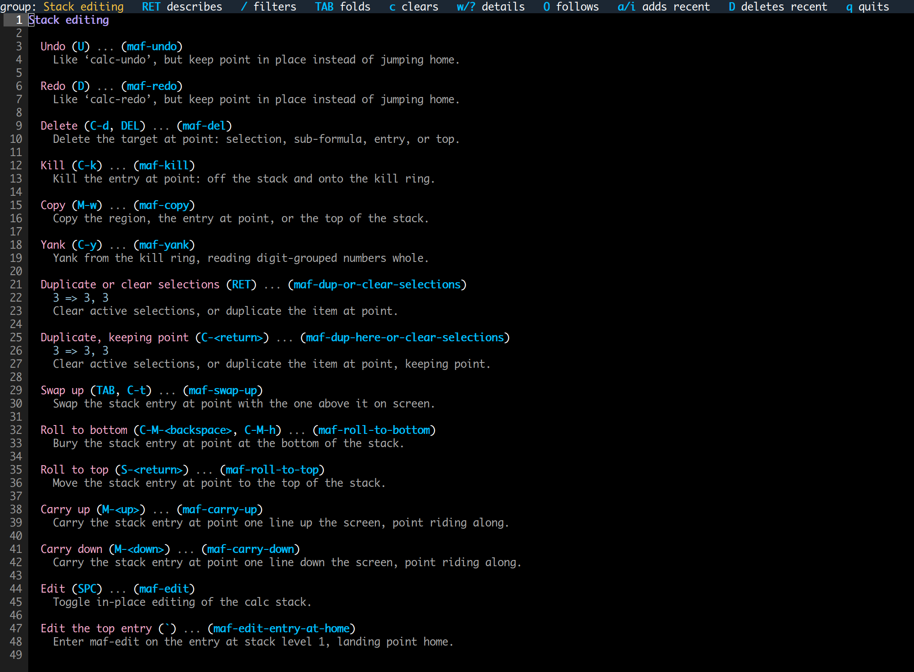

maf an extension to emacs calc
Calc is exceptionally powerful and flexible, but can also feel clunky. maf streamlines Calc’s interactive model and adds substantial features.
Commands are contextual.
The same command with the cursor in two different places.
Square an expression. Cursor on the +, only the highlighted expression is squared.
Square both sides. Cursor on the =, both sides of the equation are squared.
maf does a lot more. Direct stack editing, embedded plots, persistent sessions, LaTeX previews, stack history, and on.
Features
maf works on top of Calc as a set of optional features. Features can be toggled on or off, tailored to your preferences.
Interaction

Contextual commands
The highlight follows the cursor; commands change that expression and put the result back in place.

Direct stack editing
Open the stack as text: edit formulas or add entries, then press RET to apply your changes.

Always-on expression highlighting
The expression under the cursor is highlighted as you move, so you see what the next command will act on before you press it.
Rendering and Output

Render plots inside Emacs
Plot the current formula below the stack; Desmos and an interactive gnuplot window are also available.

LaTeX previews
Read fractions and powers in a panel that follows the cursor, while the stack stays one line per entry.

Rewrite rules
Optional modules keep polynomials in descending order, write exp(x) as e^x and simplify logarithm identities.
History and Persistence

Saved sessions
Enable persistence to restore your stack next time, with a menu to preview, restore, rename or delete saved stacks.

calc-trail replacement
Replaces calc-trail: see the commands that changed the stack, with the stack as it stood after the selected step.

Formula library
Find identities and geometry formulas, read what their variables mean and add your choice to the stack.
Help and Customization

Modules
Turn features on or off and choose the key binding profile that suits you.

Settings in a single buffer
See settings and their current values in one table, ready to change without memorizing option keys.

Ergonomic bindings
maf’s default layout keeps stack editing close to the rest of Emacs and puts common operations on single keys; calc and vim profiles are also available.

More useful help
List your active bindings by task, with command descriptions and examples.
A longer one: a parabola brought into standard form, then plotted. Collect the x terms, complete the square where point sits, move the stray constant across, simplify the other side, factor out its gcd, plot.
A shorter one: the hypotenuse of a right triangle with legs 3 and 4. The theorem comes from the formula library, the legs go in as an assignment, and the equation is solved.